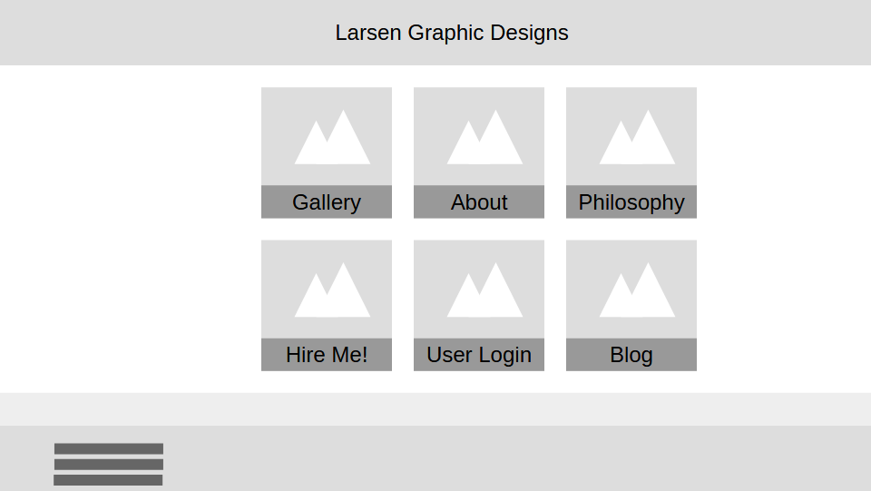
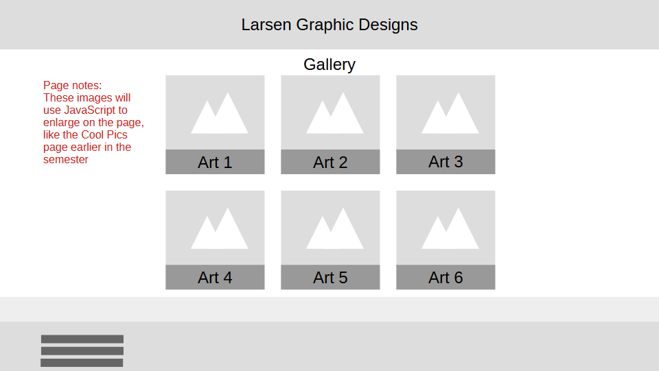
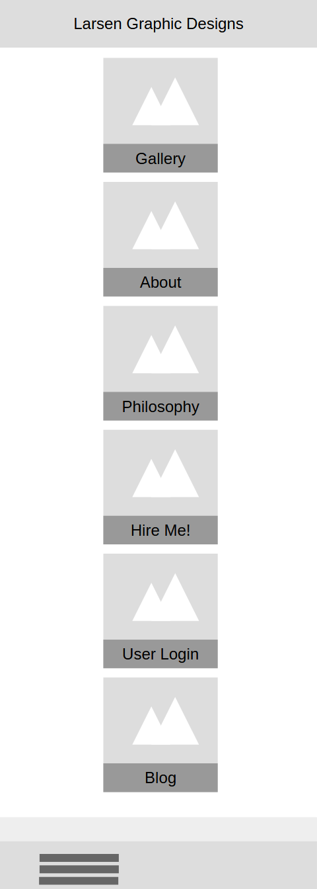

Purpose and Audience
The purpose of my site will be to present information about graphic design projects I have worked on over the years. My target audience is people looking to hire a graphic designer for cheap.
Dynamic Elements
For my child pages, I plan on adapting the Cool Pics code to create a gallery of the different designs I have done, as well as the About Me page.
Logo
This is my logo:
Colors and Fonts
Color Schema
| Primary | Secondary | Accent 1 | Accent 2 |
|---|---|---|---|
| Indigo Dye | Bice Blue | Pale Azure | Non-photo Blue |
Content
This is going to be a short bio about myself, including:
- Who I am
- How long I have been designing
- My education
- What software I have used, including what I am currently using
- Other random tidbits that may strike me as I'm writing everything
Wireframes
Desktop Site
Chile Page
Mobile Site